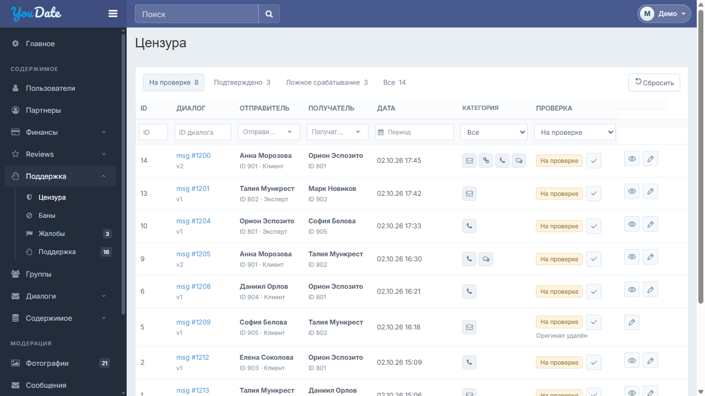
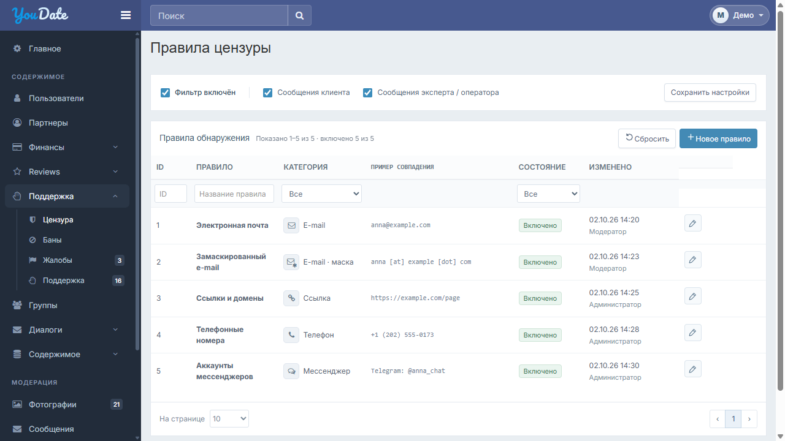

Согласованные изменения25.10.2026. Только журнал и правила; общие CSS и рабочие контроллеры сохраняются.
Инструкция Игорю · CSS: что подключать · Общий период · Проверка
| ID | Экран | Ожидаемый результат |
|---|---|---|
| CEN-UI-01 | Журнал | Каждая присутствующая категория — отдельный серый квадрат; порядок Почта → Ссылка → Телефон → Мессенджер; пустых мест нет. |
| CEN-UI-02 | Журнал | Название конкретного значка; Escape закрывает подсказку. Клик/Enter на desktop не открывает общий список. |
| CEN-UI-03 | Журнал | Нажатие показывает/закрывает одну подпись. Видимый квадрат26×26/r5; прозрачная цель44×44, gap6. Столбец212px в coarse-варианте. |
| CEN-UI-04 | Правила | Значок вместе с текстом. Обычный e-mail — конверт; маскированный — конверт с модификатором. Ссылка — цепочка, телефон — трубка, мессенджер — сообщения. |
| CEN-UI-05 | Правила | Вариант задаёт data-category-variant или presentation_variant. Значок маски не привязан к ID2, category остаётся email. |
| CEN-UI-06 | Журнал | Переиспользовать существующий finance-date-filter, form-control и зарегистрированный DateRangePicker; сохранить date_from/date_to и штатное применение формы. Без второго CSS календаря. |
| CEN-UI-07 | Обе страницы | Дата строки использует существующий основной текст таблицы12px; поле фильтра периода — штатные11px/30px. Не переносить стили самого фильтра в ячейки данных. |
| CEN-UI-08 | Обе страницы | Сохранить работающий контроллер, category keys, фильтры, статусы, права, оригинал сообщения и правила обнаружения. Инициализировать presentation один раз для нового root. |
| CEN-UI-09 | Обе страницы | Шапка, логотип, sidebar, footer и чужие страницы без изменений. global_custom/vendor/theme/финансовый адаптер не заменять файлами этого комплекта. |


В integration — файлы для адресной адаптации; preview — только демонстрация с фикстурами. На боевом сайте ничего не установлено. Данные макетов синтетические. Проверка CSS-ширин не означает проверку физических устройств.